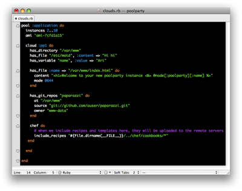

Cloud management. Simplified.
PoolParty is a cloud management system. PoolParty makes it easy to manage powerful and complex deployments on cloud computing services such as Amazon EC2.

Features:
- built-in scaling, self-healing, monitoring, and load-balancing
- support for VMware, for testing clouds
- dependency resolution is based on Chef
- clear and extensible configuration
Getting Started
0. Pre-flight check
Setup Amazon EC2 or VMware (Fusion)
1. Install PoolParty gem

1 gem install --source http://gems.github.com auser-poolparty
2. Create clouds.rb
The quickest way to be up and running is to clone our skeleton project.
1 git clone /path/to/skeleton 2 cd /pathSee generator for information on creating a clouds.rb from scratch
3. Start your cloud!
1 cloud-start -d
What next?
Check out our getting-started learning track